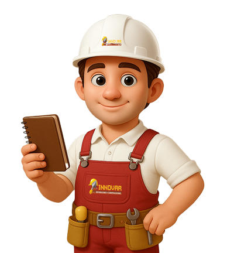
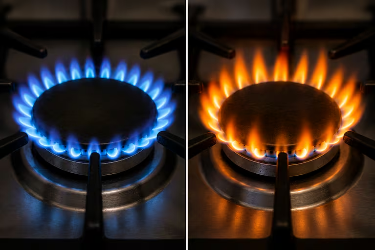
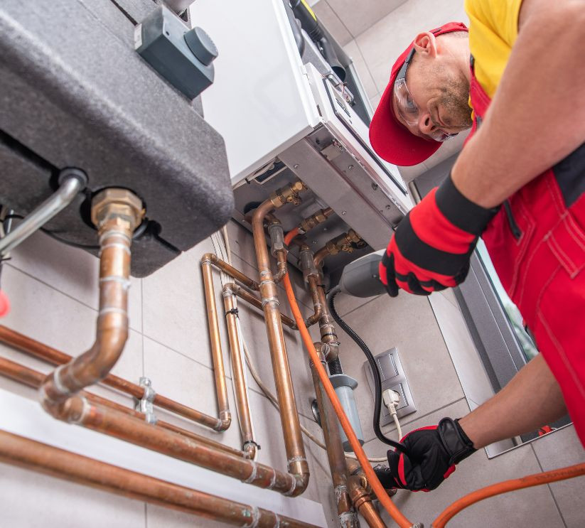
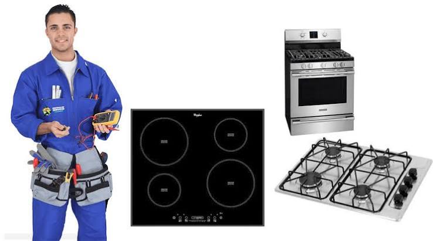
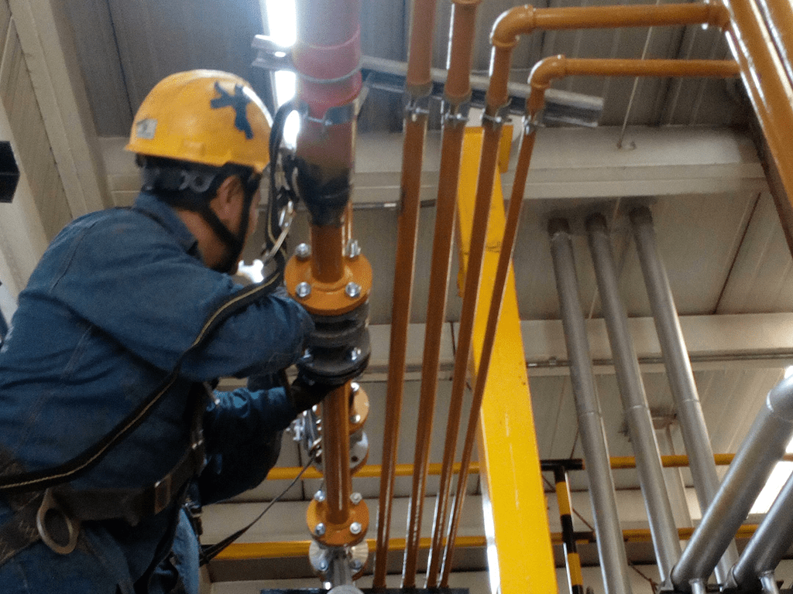
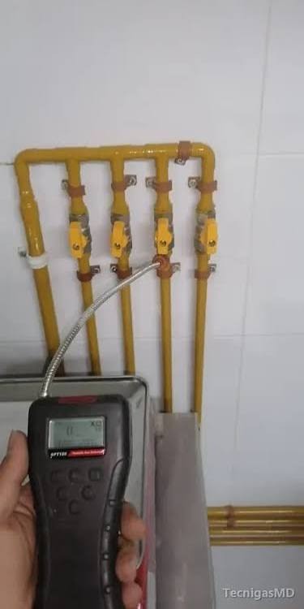
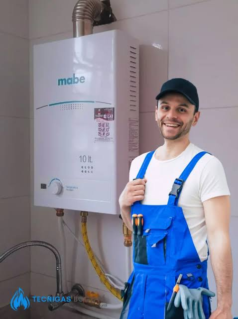
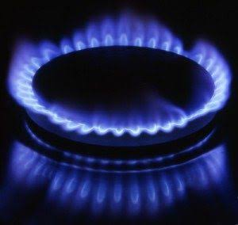

Mantenimiento, reparación e instalación de calentadores, estufas, hornos y redes internas. Atención clara y visita programada para tu hogar o negocio.

Si percibes olor a gas, sal del lugar y llama a la línea de emergencias de tu empresa prestadora desde un sitio seguro. No enciendas llamas ni uses interruptores o aparatos eléctricos dentro del lugar.
Una llama amarilla puede indicar combustión incompleta. Apaga el equipo y solicita una revisión. Si alguien se siente mal o suena una alarma de monóxido de carbono, sal al aire libre y llama a emergencias desde afuera.

Cuéntanos qué necesitas y coordinamos una visita en Bogotá o municipios de Cundinamarca.

Limpieza, calibración y revisión del piloto para que el agua caliente salga siempre a la temperatura correcta.

Cambio de quemadores, termocuplas y válvulas cuando la llama es débil, irregular o no enciende.

Tendido de redes internas y conexión de equipos nuevos siguiendo las normas vigentes.

Detectamos fugas, olor a gas y puntos de riesgo antes de que se conviertan en un problema mayor.

Elegimos el equipo adecuado para tu casa y lo dejamos funcionando el mismo día de la visita.

Un chequeo completo de tus equipos a gas, con recomendaciones claras de qué hacer y en qué orden.
Trabajo con gas natural desde hace dos décadas: redes residenciales y comerciales, calentadores y estufas. Esa experiencia me permite revisar cada caso y explicarte con claridad las opciones de servicio.
La formación técnica del SENA respalda mi trabajo en instalación, mantenimiento y reparación de equipos a gas.
Atiendo en Bogotá D.C. y en municipios de Cundinamarca, con visita diagnóstica y presupuesto claro antes de empezar cualquier trabajo.
El color de la llama puede orientar, pero no sustituye la revisión de un técnico.
En general, una llama azul y estable indica una combustión adecuada. Mantén el mantenimiento periódico del equipo.
Puede indicar mala combustión o un quemador que necesita revisión. Si notas hollín u olor a gas, deja de usar el equipo y pide orientación técnica.
Cuéntanos qué equipo tienes y qué le está pasando.